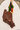
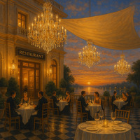
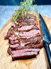
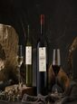

Kobe Beef
Proveniente de la región de Kobe en Japón, este corte es conocido por su marmoleo excepcional y su sabor único.
Presento un espacio de cocina de lujo inspirado en la tranquilidad de un atardecer. Platos cuidadosamente creados, maridajes con vinos de etiqueta y una selección de licores de alta gama pensados para una experiencia sofisticada.
Explorar la carta
Propongo un ambiente cálido, cómodo y elegante: La cocina se centra en ingredientes de alta calidad, presentaciones cuidadas y maridajes pensados para quien busca una experiencia gastronómica de lujo.

Proveniente de la región de Kobe en Japón, este corte es conocido por su marmoleo excepcional y su sabor único.

Este sándwich de carne de Wagyu, que incluye un filete de rib eye, se sirve con foie gras y trufas, y se remata con una copa de Dom Perignon 2000.

Vinos de etiqueta seleccionada y cócteles de autor con destilados premium, pensados para acompañar cada plato de la carta.